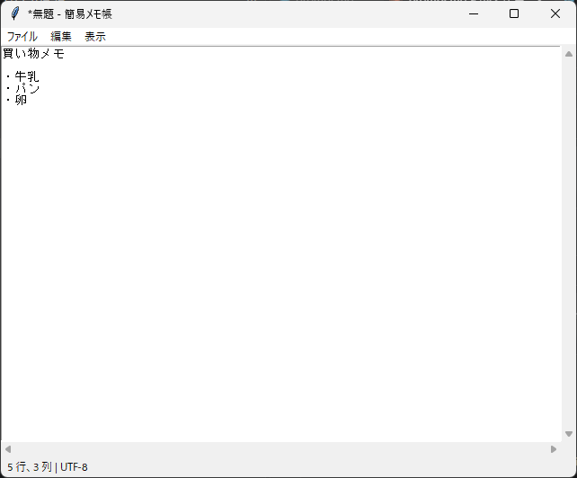

12. 実践: 簡易メモ帳アプリ
この章では、これまでに学んだ内容を組み合わせて、テキストファイルを編集できる簡易メモ帳アプリケーションを作成します。
12.1 完成イメージと機能一覧

簡易メモ帳の画面
簡易メモ帳の機能と、関連する章を次に示します。
分類 |
機能 |
関連する章 |
|---|---|---|
ファイル |
新規作成、開く、上書き保存、名前を付けて保存（文字コードは UTF-8） |
|
編集 |
元に戻す、やり直し、切り取り、コピー、貼り付け、すべて選択 |
|
表示 |
右端で折り返すかどうかの切り替え |
|
操作 |
メニューとキーボードショートカット |
|
状態の表示 |
タイトルバーにファイル名と未保存の印（ |
|
安全対策 |
未保存の変更がある状態で、新規作成、開く、終了を行う場合の確認 |
12.2 全体の構成
アプリケーションは、MemoApp クラスと、それを起動する main 関数で構成します。第 11 章で説明したように、MemoApp はメインウィンドウを属性 root として保持します。主なメソッドを次に示します。
メソッド |
役割 |
|---|---|
|
テキスト領域、スクロールバー、ステータスバーを作成します。 |
|
メニューバーを作成します。 |
|
キーボードショートカットを登録します。 |
|
新規作成と、ファイルの読み込みを行います。 |
|
上書き保存と、名前を付けて保存を行います。 |
|
未保存の変更を確認してから終了します。 |
|
未保存の変更がある場合に、保存するかどうかを確認します。 |
|
タイトルバーとステータスバーの表示を更新します。 |
名前が _ で始まるメソッドは、クラスの内部だけで使うメソッドです。以降の節では、主なメソッドを抜粋して説明します。抜粋の行番号は、12.9 全体のコードの行番号と対応しています。
12.3 画面の構成
51 def _create_widgets(self) -> None:
52 """テキスト領域、スクロールバー、ステータスバーを作成します。"""
53 # ウィンドウを縮めても消えないように、ステータスバーを先に配置します
54 statusbar = ttk.Label(
55 self.root, textvariable=self.status, anchor="w", padding=(5, 2)
56 )
57 statusbar.pack(side="bottom", fill="x")
58
59 frame = ttk.Frame(self.root)
60 frame.pack(side="top", fill="both", expand=True)
61
62 # undo=True で「元に戻す」と「やり直し」が使えるようになります
63 self.text = tk.Text(frame, wrap="none", undo=True)
64 y_scroll = ttk.Scrollbar(
65 frame, orient="vertical", command=self.text.yview
66 )
67 x_scroll = ttk.Scrollbar(
68 frame, orient="horizontal", command=self.text.xview
69 )
70 self.text.configure(
71 yscrollcommand=y_scroll.set, xscrollcommand=x_scroll.set
72 )
73
74 self.text.grid(row=0, column=0, sticky="nsew")
75 y_scroll.grid(row=0, column=1, sticky="ns")
76 x_scroll.grid(row=1, column=0, sticky="ew")
77 frame.rowconfigure(0, weight=1)
78 frame.columnconfigure(0, weight=1)
79
80 # <<Modified>> は、変更フラグ (edit_modified) が切り替わったときに発生します
81 self.text.bind("<<Modified>>", self._on_modified)
82 self.text.bind("<KeyRelease>", self._on_cursor_moved)
83 self.text.bind("<ButtonRelease-1>", self._on_cursor_moved)
画面は、下端のステータスバーと、残りの領域を占める編集領域に分かれます。ステータスバーを編集領域より先に pack しているのは、ウィンドウを縮めたときにステータスバーが隠れないようにするためです。pack は配置した順に領域を割り当てるので（第 4 章参照）、先に配置したウィジェットの領域が優先して確保されます。
編集領域では、Text と縦横の Scrollbar を grid で配置し、Text のセルにだけ weight を設定しています。Text の undo=True は「元に戻す」と「やり直し」を有効にするオプションです。
最後の 3 行では、Text のイベントを bind しています。<<Modified>> は、Text の変更フラグ（内容が変更されたかどうかを表すフラグ）が切り替わったときに発生する仮想イベントです。
12.4 メニューの実装
85 def _create_menu(self) -> None:
86 """メニューバーを作成します。"""
87 menubar = tk.Menu(self.root)
88 self.root.configure(menu=menubar)
89
90 file_menu = tk.Menu(menubar)
91 menubar.add_cascade(label="ファイル", menu=file_menu)
92 file_menu.add_command(
93 label="新規", accelerator="Ctrl+N", command=self.new_file
94 )
95 file_menu.add_command(
96 label="開く...", accelerator="Ctrl+O", command=self.open_file
97 )
98 file_menu.add_command(
99 label="保存", accelerator="Ctrl+S", command=self.save_file
100 )
101 file_menu.add_command(
102 label="名前を付けて保存...",
103 accelerator="Ctrl+Shift+S",
104 command=self.save_file_as,
105 )
106 file_menu.add_separator()
107 file_menu.add_command(label="終了", command=self.quit)
108
109 edit_menu = tk.Menu(menubar)
110 menubar.add_cascade(label="編集", menu=edit_menu)
111 # Text ウィジェットに標準で用意されている仮想イベントを発生させます
112 edit_menu.add_command(
113 label="元に戻す",
114 accelerator="Ctrl+Z",
115 command=self._event("<<Undo>>"),
116 )
117 edit_menu.add_command(
118 label="やり直し",
119 accelerator="Ctrl+Y",
120 command=self._event("<<Redo>>"),
121 )
122 edit_menu.add_separator()
123 edit_menu.add_command(
124 label="切り取り",
125 accelerator="Ctrl+X",
126 command=self._event("<<Cut>>"),
127 )
128 edit_menu.add_command(
129 label="コピー",
130 accelerator="Ctrl+C",
131 command=self._event("<<Copy>>"),
132 )
133 edit_menu.add_command(
134 label="貼り付け",
135 accelerator="Ctrl+V",
136 command=self._event("<<Paste>>"),
137 )
138 edit_menu.add_separator()
139 edit_menu.add_command(
140 label="すべて選択", accelerator="Ctrl+A", command=self.select_all
141 )
142
143 view_menu = tk.Menu(menubar)
144 menubar.add_cascade(label="表示", menu=view_menu)
145 view_menu.add_checkbutton(
146 label="右端で折り返す",
147 variable=self.wrap,
148 command=self._apply_wrap,
149 )
「編集」メニューの各項目は、Text に仮想イベント（<<Undo>>、<<Copy>> など）を発生させるだけです。Text には、これらの仮想イベントに対応する標準の動作が bind されているため、自分で切り取りやコピーの処理を書く必要はありません。仮想イベントは event_generate メソッドで発生させます。_event メソッドは、event_generate を呼び出す関数を作って返すメソッドで、メニューの command に指定するために使っています。
151 def _event(self, virtual_event: str) -> Callable[[], None]:
152 """Text に仮想イベントを発生させる関数を返します (メニューの command 用)。"""
153
154 def generate() -> None:
155 self.text.event_generate(virtual_event)
156 self._update_status() # 貼り付けなどでカーソルが動くため
157
158 return generate
「表示」メニューの「右端で折り返す」は add_checkbutton で作成し、BooleanVar の値に応じて Text の wrap オプションを切り替えています。日本語の文章には単語の区切りの空白がないため、文字単位で折り返す "char" を指定しています。
12.5 キーボードショートカット
160 def _bind_shortcuts(self) -> None:
161 """キーボードショートカットを登録します。"""
162 shortcuts: dict[str, Callable[[], object]] = {
163 "<Control-n>": self.new_file,
164 "<Control-o>": self.open_file,
165 "<Control-s>": self.save_file,
166 "<Control-Shift-S>": self.save_file_as,
167 "<Control-a>": self.select_all,
168 }
169 # Text ウィジェットには Ctrl+O (改行の挿入) などの標準の動作があります。
170 # Text 自体に bind し、"break" を返して標準の動作を止めます。
171 for sequence, command in shortcuts.items():
172 self.text.bind(sequence, partial(self._on_shortcut, command))
174 @staticmethod
175 def _on_shortcut(
176 command: Callable[[], object], event: tk.Event[tk.Misc]
177 ) -> str:
178 """ショートカットに対応する処理を実行し、標準の動作を止めます。"""
179 command()
180 return "break"
メニューの accelerator は表記を表示するだけなので、ショートカットキーは bind で登録します。Text には Ctrl + O で改行を挿入するなどの標準の動作が bind されているため、ショートカットは Text 自体に bind し、_on_shortcut で "break" を返して標準の動作を止めています（6.5 バインドタグと "break" 参照）。
partial(self._on_shortcut, command) は、最初の引数 command を固定した関数を作ります。イベントが発生すると、この関数に tk.Event オブジェクトが 2 番目の引数 event として渡されます。
元に戻す（Ctrl + Z）、切り取り（Ctrl + X）、コピー（Ctrl + C）、貼り付け（Ctrl + V）は、Text の標準の動作をそのまま使うため、登録していません。なお、Windows 版の Tk では、やり直しに Ctrl + Y が割り当てられていますが、Linux 版では Ctrl + Shift + Z です。メニューに表示している accelerator の表記は Windows を想定しています。また、6.3 で説明したとおり、<Control-s> などは Caps Lock が有効なときには発生しません。
12.6 ファイルの読み込みと保存
191 def open_file(self) -> None:
192 """ファイルを選択して読み込みます。"""
193 if not self._confirm_discard():
194 return
195 path_str = filedialog.askopenfilename(
196 parent=self.root, filetypes=FILE_TYPES
197 )
198 if not path_str:
199 return
200 path = Path(path_str)
201 try:
202 content = path.read_text(encoding=ENCODING)
203 except (OSError, UnicodeDecodeError) as error:
204 messagebox.showerror(
205 APP_NAME,
206 f"ファイルを開けませんでした。\n{error}",
207 parent=self.root,
208 )
209 return
210 self._set_content(content, path)
232 def _write(self, path: Path) -> bool:
233 """テキストの内容をファイルに書き込みます。成功した場合は True を返します。"""
234 # "end" の直前には Text が自動で付ける改行があるため、"end-1c" までを取得します
235 content = self.text.get("1.0", "end-1c")
236 try:
237 path.write_text(content, encoding=ENCODING)
238 except OSError as error:
239 messagebox.showerror(
240 APP_NAME, f"保存できませんでした。\n{error}", parent=self.root
241 )
242 return False
243 self.file_path = path
244 self.text.edit_modified(False)
245 self._update_title()
246 return True
ファイルの読み書きには、pathlib.Path の read_text と write_text を使い、文字コードは UTF-8 に固定しています。読み書きに失敗した場合は、messagebox.showerror でエラーの内容を表示します。
OSErrorは、ファイルが存在しない場合や、書き込む権限がない場合などに発生します。UnicodeDecodeErrorは、Shift_JIS で保存されたファイルなど、UTF-8 として読めないファイルを開いた場合に発生します。
保存するときは、Text が末尾に自動で付ける改行を含めないように、"end-1c" までの文字列を取得しています（第 3 章参照）。保存に成功したら、edit_modified(False) で変更フラグを消去します。
save_file は、ファイル名が決まっていない場合は save_file_as を呼び出し、決まっている場合は上書き保存します。どちらのメソッドも、保存できたかどうかを bool で返します。この戻り値は、次節の確認処理で使います。
12.7 変更の管理と終了時の確認
260 def _confirm_discard(self) -> bool:
261 """未保存の変更があれば保存するかを確認します。
262
263 処理を続けてよい場合は True、キャンセルされた場合は False を返します。
264 """
265 if not self.text.edit_modified():
266 return True
267 answer = messagebox.askyesnocancel(
268 APP_NAME, "変更内容を保存しますか？", parent=self.root
269 )
270 if answer is None: # キャンセル
271 return False
272 if answer: # はい
273 return self.save_file()
274 return True # いいえ (保存せずに続行)
Text の edit_modified() は、最後に変更フラグを消去してから内容が変更されたかどうかを返します。変更されている場合は、askyesnocancel で保存するかどうかを確認します。
選択 |
動作 |
|---|---|
はい |
保存します。保存がキャンセルされたり失敗したりした場合は、処理を中止します。 |
いいえ |
保存せずに処理を続けます。 |
キャンセル |
処理を中止します。 |
new_file、open_file、quit の各メソッドは、最初に _confirm_discard を呼び出し、False が返された場合は何もせずに戻ります。また、__init__ で root.protocol("WM_DELETE_WINDOW", self.quit) を設定しているため、タイトルバーの閉じるボタンでも同じ確認が行われます。
タイトルバーの * は、_update_title が変更フラグに応じて付け外ししています。_update_title は、<<Modified>> イベントで呼び出される _on_modified から呼び出されます。
12.8 ステータスバー
303 def _update_status(self) -> None:
304 """カーソルの位置 (行と列) をステータスバーに表示します。"""
305 # index は "行.列" の形式の文字列を返します。行は 1 から、列は 0 から数えます。
306 line, column = self.text.index("insert").split(".")
307 self.status.set(
308 f"{line} 行、{int(column) + 1} 列 | {ENCODING.upper()}"
309 )
index("insert") は、入力カーソルの位置を "行.列" の形式で返します。列は 0 から数えるため、1 を足して表示しています。このメソッドは、キーが離されたとき（<KeyRelease>）とマウスのボタンが離されたとき（<ButtonRelease-1>）に呼び出されます。メニューから貼り付けなどを実行した場合もカーソルが動くため、_event メソッドが作る関数の中でも呼び出しています。
12.9 全体のコード
1"""第 12 章: 簡易メモ帳アプリケーションです。
2
3これまでの章で学んだ内容を組み合わせ、次の機能を持つテキストエディターを作ります。
4
5* ファイルの新規作成、読み込み、保存 (文字コードは UTF-8)
6* 元に戻す、やり直し、切り取り、コピー、貼り付け、すべて選択
7* 右端での折り返しの切り替え
8* キーボードショートカット
9* カーソル位置を表示するステータスバー
10* 未保存の変更がある場合の確認
11"""
12
13from __future__ import annotations
14
15import tkinter as tk
16from collections.abc import Callable
17from functools import partial
18from pathlib import Path
19from tkinter import filedialog, messagebox, ttk
20
21APP_NAME = "簡易メモ帳"
22ENCODING = "utf-8"
23FILE_TYPES = [("テキストファイル", "*.txt"), ("すべてのファイル", "*.*")]
24
25
26class MemoApp:
27 """簡易メモ帳のアプリケーションです。"""
28
29 def __init__(self, root: tk.Tk) -> None:
30 self.root = root
31 # 編集中のファイル (一度も保存していない場合は None)
32 self.file_path: Path | None = None
33 self.status = tk.StringVar()
34 self.wrap = tk.BooleanVar(value=False)
35
36 self.root.geometry("640x480")
37 self.root.option_add("*tearOff", False)
38 self._create_widgets()
39 self._create_menu()
40 self._bind_shortcuts()
41 # ウィンドウの閉じるボタンでも、未保存の変更を確認します
42 self.root.protocol("WM_DELETE_WINDOW", self.quit)
43
44 self._update_title()
45 self._update_status()
46 self.text.focus_set()
47
48 # ------------------------------------------------------------
49 # 画面の構築
50 # ------------------------------------------------------------
51 def _create_widgets(self) -> None:
52 """テキスト領域、スクロールバー、ステータスバーを作成します。"""
53 # ウィンドウを縮めても消えないように、ステータスバーを先に配置します
54 statusbar = ttk.Label(
55 self.root, textvariable=self.status, anchor="w", padding=(5, 2)
56 )
57 statusbar.pack(side="bottom", fill="x")
58
59 frame = ttk.Frame(self.root)
60 frame.pack(side="top", fill="both", expand=True)
61
62 # undo=True で「元に戻す」と「やり直し」が使えるようになります
63 self.text = tk.Text(frame, wrap="none", undo=True)
64 y_scroll = ttk.Scrollbar(
65 frame, orient="vertical", command=self.text.yview
66 )
67 x_scroll = ttk.Scrollbar(
68 frame, orient="horizontal", command=self.text.xview
69 )
70 self.text.configure(
71 yscrollcommand=y_scroll.set, xscrollcommand=x_scroll.set
72 )
73
74 self.text.grid(row=0, column=0, sticky="nsew")
75 y_scroll.grid(row=0, column=1, sticky="ns")
76 x_scroll.grid(row=1, column=0, sticky="ew")
77 frame.rowconfigure(0, weight=1)
78 frame.columnconfigure(0, weight=1)
79
80 # <<Modified>> は、変更フラグ (edit_modified) が切り替わったときに発生します
81 self.text.bind("<<Modified>>", self._on_modified)
82 self.text.bind("<KeyRelease>", self._on_cursor_moved)
83 self.text.bind("<ButtonRelease-1>", self._on_cursor_moved)
84
85 def _create_menu(self) -> None:
86 """メニューバーを作成します。"""
87 menubar = tk.Menu(self.root)
88 self.root.configure(menu=menubar)
89
90 file_menu = tk.Menu(menubar)
91 menubar.add_cascade(label="ファイル", menu=file_menu)
92 file_menu.add_command(
93 label="新規", accelerator="Ctrl+N", command=self.new_file
94 )
95 file_menu.add_command(
96 label="開く...", accelerator="Ctrl+O", command=self.open_file
97 )
98 file_menu.add_command(
99 label="保存", accelerator="Ctrl+S", command=self.save_file
100 )
101 file_menu.add_command(
102 label="名前を付けて保存...",
103 accelerator="Ctrl+Shift+S",
104 command=self.save_file_as,
105 )
106 file_menu.add_separator()
107 file_menu.add_command(label="終了", command=self.quit)
108
109 edit_menu = tk.Menu(menubar)
110 menubar.add_cascade(label="編集", menu=edit_menu)
111 # Text ウィジェットに標準で用意されている仮想イベントを発生させます
112 edit_menu.add_command(
113 label="元に戻す",
114 accelerator="Ctrl+Z",
115 command=self._event("<<Undo>>"),
116 )
117 edit_menu.add_command(
118 label="やり直し",
119 accelerator="Ctrl+Y",
120 command=self._event("<<Redo>>"),
121 )
122 edit_menu.add_separator()
123 edit_menu.add_command(
124 label="切り取り",
125 accelerator="Ctrl+X",
126 command=self._event("<<Cut>>"),
127 )
128 edit_menu.add_command(
129 label="コピー",
130 accelerator="Ctrl+C",
131 command=self._event("<<Copy>>"),
132 )
133 edit_menu.add_command(
134 label="貼り付け",
135 accelerator="Ctrl+V",
136 command=self._event("<<Paste>>"),
137 )
138 edit_menu.add_separator()
139 edit_menu.add_command(
140 label="すべて選択", accelerator="Ctrl+A", command=self.select_all
141 )
142
143 view_menu = tk.Menu(menubar)
144 menubar.add_cascade(label="表示", menu=view_menu)
145 view_menu.add_checkbutton(
146 label="右端で折り返す",
147 variable=self.wrap,
148 command=self._apply_wrap,
149 )
150
151 def _event(self, virtual_event: str) -> Callable[[], None]:
152 """Text に仮想イベントを発生させる関数を返します (メニューの command 用)。"""
153
154 def generate() -> None:
155 self.text.event_generate(virtual_event)
156 self._update_status() # 貼り付けなどでカーソルが動くため
157
158 return generate
159
160 def _bind_shortcuts(self) -> None:
161 """キーボードショートカットを登録します。"""
162 shortcuts: dict[str, Callable[[], object]] = {
163 "<Control-n>": self.new_file,
164 "<Control-o>": self.open_file,
165 "<Control-s>": self.save_file,
166 "<Control-Shift-S>": self.save_file_as,
167 "<Control-a>": self.select_all,
168 }
169 # Text ウィジェットには Ctrl+O (改行の挿入) などの標準の動作があります。
170 # Text 自体に bind し、"break" を返して標準の動作を止めます。
171 for sequence, command in shortcuts.items():
172 self.text.bind(sequence, partial(self._on_shortcut, command))
173
174 @staticmethod
175 def _on_shortcut(
176 command: Callable[[], object], event: tk.Event[tk.Misc]
177 ) -> str:
178 """ショートカットに対応する処理を実行し、標準の動作を止めます。"""
179 command()
180 return "break"
181
182 # ------------------------------------------------------------
183 # ファイル操作
184 # ------------------------------------------------------------
185 def new_file(self) -> None:
186 """編集中の内容を破棄して、新しい文書を開始します。"""
187 if not self._confirm_discard():
188 return
189 self._set_content("", None)
190
191 def open_file(self) -> None:
192 """ファイルを選択して読み込みます。"""
193 if not self._confirm_discard():
194 return
195 path_str = filedialog.askopenfilename(
196 parent=self.root, filetypes=FILE_TYPES
197 )
198 if not path_str:
199 return
200 path = Path(path_str)
201 try:
202 content = path.read_text(encoding=ENCODING)
203 except (OSError, UnicodeDecodeError) as error:
204 messagebox.showerror(
205 APP_NAME,
206 f"ファイルを開けませんでした。\n{error}",
207 parent=self.root,
208 )
209 return
210 self._set_content(content, path)
211
212 def save_file(self) -> bool:
213 """上書き保存します。保存できた場合は True を返します。"""
214 if self.file_path is None:
215 return self.save_file_as()
216 return self._write(self.file_path)
217
218 def save_file_as(self) -> bool:
219 """保存先を選択して保存します。保存できた場合は True を返します。"""
220 path_str = filedialog.asksaveasfilename(
221 parent=self.root, filetypes=FILE_TYPES, defaultextension=".txt"
222 )
223 if not path_str:
224 return False
225 return self._write(Path(path_str))
226
227 def quit(self) -> None:
228 """未保存の変更を確認してから終了します。"""
229 if self._confirm_discard():
230 self.root.destroy()
231
232 def _write(self, path: Path) -> bool:
233 """テキストの内容をファイルに書き込みます。成功した場合は True を返します。"""
234 # "end" の直前には Text が自動で付ける改行があるため、"end-1c" までを取得します
235 content = self.text.get("1.0", "end-1c")
236 try:
237 path.write_text(content, encoding=ENCODING)
238 except OSError as error:
239 messagebox.showerror(
240 APP_NAME, f"保存できませんでした。\n{error}", parent=self.root
241 )
242 return False
243 self.file_path = path
244 self.text.edit_modified(False)
245 self._update_title()
246 return True
247
248 def _set_content(self, content: str, path: Path | None) -> None:
249 """テキストの内容を置き換え、編集状態を初期化します。"""
250 self.text.delete("1.0", "end")
251 self.text.insert("1.0", content)
252 self.text.mark_set("insert", "1.0")
253 self.text.see("insert")
254 self.text.edit_reset() # 元に戻す履歴を消去します
255 self.text.edit_modified(False)
256 self.file_path = path
257 self._update_title()
258 self._update_status()
259
260 def _confirm_discard(self) -> bool:
261 """未保存の変更があれば保存するかを確認します。
262
263 処理を続けてよい場合は True、キャンセルされた場合は False を返します。
264 """
265 if not self.text.edit_modified():
266 return True
267 answer = messagebox.askyesnocancel(
268 APP_NAME, "変更内容を保存しますか？", parent=self.root
269 )
270 if answer is None: # キャンセル
271 return False
272 if answer: # はい
273 return self.save_file()
274 return True # いいえ (保存せずに続行)
275
276 # ------------------------------------------------------------
277 # 編集と表示
278 # ------------------------------------------------------------
279 def select_all(self) -> None:
280 """すべての文字列を選択します。"""
281 self.text.tag_add("sel", "1.0", "end-1c")
282 self.text.mark_set("insert", "end-1c")
283 self._update_status()
284
285 def _apply_wrap(self) -> None:
286 """折り返しの設定をテキスト領域に反映します。"""
287 self.text.configure(wrap="char" if self.wrap.get() else "none")
288
289 def _on_modified(self, event: tk.Event[tk.Misc]) -> None:
290 """変更フラグが切り替わったときに、タイトルを更新します。"""
291 self._update_title()
292
293 def _on_cursor_moved(self, event: tk.Event[tk.Misc]) -> None:
294 """キー入力やクリックの後に、ステータスバーを更新します。"""
295 self._update_status()
296
297 def _update_title(self) -> None:
298 """ファイル名と変更の有無をタイトルバーに表示します。"""
299 name = self.file_path.name if self.file_path else "無題"
300 mark = "*" if self.text.edit_modified() else ""
301 self.root.title(f"{mark}{name} - {APP_NAME}")
302
303 def _update_status(self) -> None:
304 """カーソルの位置 (行と列) をステータスバーに表示します。"""
305 # index は "行.列" の形式の文字列を返します。行は 1 から、列は 0 から数えます。
306 line, column = self.text.index("insert").split(".")
307 self.status.set(
308 f"{line} 行、{int(column) + 1} 列 | {ENCODING.upper()}"
309 )
310
311
312def main() -> None:
313 """簡易メモ帳を起動します。"""
314 root = tk.Tk()
315 MemoApp(root)
316 root.mainloop()
317
318
319if __name__ == "__main__":
320 main()
12.10 発展課題
簡易メモ帳に、次のような機能を追加してみましょう。
文字列の検索と置換（Toplevel で入力画面を作り、Text の
searchメソッドとタグで検索結果を強調表示します）フォントの種類と大きさの変更（第 9 章の名前付きフォントを使います）
最近使ったファイルの一覧（「ファイル」メニューにサブメニューを追加します）
Shift_JIS など、UTF-8 以外の文字コードでの読み書き
行番号の表示（Text の左側に Canvas を配置し、行番号を描画します）